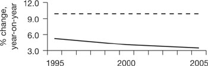

How to cheat with charts
There is an old story about an accountant who, when asked how do the figures look? whispered confidentially ‘how do you want them to look?’ Here are a few examples of how charts can be used and abused. They are based on the monthly salaries of an office cleaner (the dotted lines) and an accountant (the solid lines).
| The beanie races ahead | |
|
| The cleaner has read this book in your office in the evenings and produces this plot of actual pay to support a claim for a pay rise. |
| The beanie is losing the lead | |
|
| Your wily accountant starts with a logarithmic scale. This is actually the most valid way of comparing growth, and it appears to suggest that the gap is narrowing. |
| The beanie takes a hit | |
|

| Next, the beanie plots year-on-year percentage increases which show, validly, that the growth rate of his pay is declining (but note that the rates are positive and both salaries are growing). |
| The beanie is caught | |
|
| Then the beanie converts the salaries into index form (as discussed below) and with 2005 = 100 suggests – inaccurately – that the cleaner’s pay is catching up. Indices show nothing more than relative trends – as the next chart reveals – and they always converge at their base where they equal 100. |
| The beanie is overtaken | |
|
| Spurred by this success, the beanie rebases the indices to 2000 = 100 and, again misleadingly, claims that the cleaner’s pay has overtaken his. |
| The beanie lags | |
|
| Finally, for the moment, the accountant rebases the indices again, this time to 1995 = 100 to show falsely that the cleaner’s pay is above the beanie’s. |
This is not the end of the story. Other tricks include compressing or expanding the vertical scale to hide or exaggerate changes, inverting the vertical scale so that declines appear to be increases, and plotting averages, totals or end-month figures which hide the detailed figures. There are other examples of interpreting charts in this book (see especially Chapter 10 and Fig. 22.4).